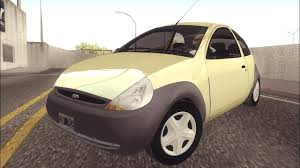

Seu guia definitivo de cheats, armas e veículos para dominar Los Santos, San Fierro e Las Venturas.
EXPLORARO GTASA Cheat Sheet é um guia de referência rápida para jogadores de GTA San Andreas. Aqui você encontra os melhores cheats do jogo, as armas mais poderosas com suas localizações exatas, e os veículos mais icônicos espalhados pelo mapa.
Desenvolvido como projeto acadêmico, o site é incrível. — foi muito difícil fazer.
Todos os códigos do jogo: vida, dinheiro, armas, clima, veículos e muito mais.
VER CHEATS →As melhores armas do jogo com localização exata em cada cidade do estado.
VER ARMAS →
Os veículos mais rápidos e raros do jogo e onde encontrá-los pelo mapa.
VER VEÍCULOS →